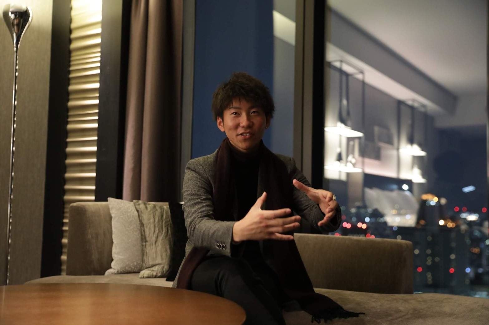

| 凡人のすごい起業法 〜なぜ令和時代こそ人生を激変させるチャンスなのか？〜 | |
| 片山幸太 | |
| Hitotsuku Publication (2019) | |
はじめまして！
片山幸太です。
この本を手に取ってくださったということは、あなたにはきっとこんな夢があるのではないでしょうか。
学校を卒業して就職して働くという生き方はしたくない！
自分がやりたいことをしたい！
好きなことをやって稼ぎたい！
こうした夢は、人生を充実させてくれる大切なものですよね。
かつては僕も同じように考えていました。
だから、もしあなたがこうした夢を持っているなら、ぜひ叶えてほしいと思っています。
僕はごく普通の家庭で育ち、大学まで進学しました。
そして在学中に起業し、卒業後は就職せず自分でビジネスをするという生き方を選択しました。
現在は月商２４０万円を稼げるようになり、毎日がとても充実しています。
ひと昔前までは、「学校を卒業したら就職活動をして、どこかの企業に就職し、与えられた仕事をしながら定年まで働く」というのが一般的な社会人としての生き方でしたよね。
しかし、今の時代、働き方はひとつではありません。
学校を卒業したら企業に就職するというスタイルを選ぶ人もいれば、企業には就職せずひとまずやりたいことを見つけるために、いろんなことに挑戦するスタイルの人もいます。
フリーランスをしつつ、企業で働く人もいますね。
起業と聞くと何だか難しそうに聞こえるかもしれませんが、そんなことはないんです。
僕は実際にビジネスを自分でやっていますけど、ビジネスをどう始めてどう軌道に乗せるか、コツさえつかんでいれば何も恐れることはないということを痛感しています。
この感覚、自分でビジネスをやっていく醍醐味を、一人でも多くの人に味わってほしい！
この本では、初心者でも起業して稼いでいくためのコツをお伝えしていきます。
さらに、ビジネスを成功させるうえでは欠かせない自己成長についても、さまざまな視点からポイントをご紹介していこうと思っています。
起業し自分でビジネスをやっていくという夢に挑戦したい人。
しっかり稼いで、好きな場所へ行ったり好きな物を食べたり、好きな人たちと時間を過ごしたい人。
そんな夢に向かっていきたいあなたに、僕が伴奏してサポートします。
さあ、一緒に一歩を踏みだしましょう！
起業家というと、どんなイメージありますか？
「普通の人とは違う」「何か特別な才能がある」「大きな挫折を味わった波乱万丈な人生の持ち主」......。
こんなイメージ、ありますよね。
周囲に起業家がいない人の場合は、自分とは違う世界の人間という感じだと思います。
起業家の一人である僕も、あなたから見ればそんなイメージかな？
でも、僕は本当に平凡な人生を送ってきたから、僕を見てもらえれば「起業家は特別な人しかなれない」という考えをひっくり返してもらえる自信があります。
僕はごく普通の一般家庭に生まれて、ごく普通の教育を受けてきました。
小学校、中学校、高校、大学と進学してきた、どこにでもいる一人の人間です。
成績は突出していいわけではないけれど、わるくもなく、部活は小学校から高校の途中までサッカー三昧。
こういう生徒、よくいますよね。
大きな挫折の経験があると言えばインパクトが強いのだろうけど、僕の挫折と言えば受験に失敗したこと。
大学受験ではボーダーラインぎりぎりの点数で、補欠不合格という立場になりました。
補欠ならたいていは合格するものだと思っていたから、不合格になってしまったときは「えっ、それはないでしょ」と僕なりにショックだったことを覚えています。
とはいえ、別の大学に合格して大学生になれたので、挫折と言えるほどではない...。
とんとん拍子とまでは言わないけれど、割とスムーズに人生を歩んできたと自分でも思います。
大きな浮き沈みなんてない、平凡な人生。
そんな僕は、人前に出ることが好きな性格。
目立ちたがり屋で、とにかく「みんな僕を見てくれよ！」という気持ちが常にあって、人と同じ道を選んでいくのはつまらないと思っていました。
それまでは、「皆が受けるなら僕も大学受験しようか」などと周囲に合わせてきたものの、実はずっと違和感があったんです。
もし僕の中に、どこか人とは違うという起業家のイメージに合う部分があるとするなら、この違和感を持っていたということですね。
卒業して就職する、そんな生き方はしたくないという思いが、大学生になってから心の中に少しずつ生まれてきていました。
周囲に合わせる生き方をしたくないな......。
僕の心の中に生まれた小さな思いが急激に膨らむきっかけになったのは、僕をかわいがってくれていた親戚の死です。
企業経営者だった親戚は、とても前向きなバイタリティあふれる人で、僕は子供心に「かっこいい大人だな」といつも思っていました。
僕の親戚には何人か経営者がいるので、自分でビジネスをしているという働き方は、もともと僕の中でも特別なことではなかったのですが、彼は特に好きな人でした。
その親戚が亡くなり、お葬式に参列したとき、地域の名士や他の企業の経営者などをはじめ、多くの参列者がいたことに僕は衝撃を受けました。
一般企業に勤めるサラリーマンだったらまず縁がないような有名な方々が、彼の死を悼んでいる。
斎場に入りきれないほどたくさんの方々が、彼のために参列している。
その事実を目の当たりにして、改めて「おっちゃんってすごい人だったんだ」と親戚の偉大さを痛感したんです。
そして同時に思いました。
僕も彼のようにすばらしい経営者になりたい。
これだけ多くの人に慕われるような存在になりたい。
もちろん、サラリーマンであっても周囲から尊敬されている人はたくさんいます。
ただ、経営者でなければつながりがないだろう立場の人たちがいる世界に、僕は大きな魅力を感じました。
親戚の死をきっかけに、僕は人生の方向性をはっきりと自覚するようになりました。
経営者になりたいという夢を持つことで、覚悟ができたというか。
そろそろ就職活動をしなければならない大学３年生になったとき、すでに僕は就職するという考えそのものを持っていませんでした。
経営者になろうと決めていたから。
僕の父は、親戚で経営している会社に就職し、後に独立した経験を持っています。
独立後は代表者として忙しい毎日を送っている人でした。
そんな父に憧れを抱いていた自覚はないんですが、独立して生きていくとはどういうことかというのは、父の姿から自然と僕の中に刷り込まれていたかもしれません。
ある日、僕は父に就職しないこと、起業して自分でビジネスをやっていきたいことを話しました。
我が子が不安定な経営者の道を選ぶとなると、普通の親は反対するものですよね。
ましてや、父は親戚の会社から独立して苦労していたはずなので、内心「きっと反対される」と覚悟はしていました。
しかし、僕の決意を聞いた父は、あっさりと賛成してくれました。
父自身、一度就職したものの自分の意志で独立したことで、厳格な性格だった祖父からとても厳しくされたらしく、「こうしたい」と言っても反対し束縛を受けていたのだとか。
それがとても苦しかったらしいのです。
だから、大学生という若い頃から就職活動をせず起業したいと言った息子に対して、自分のように悩んでほしくなかったようです。
「やってみたらいいよ」「もし失敗してもそれもまた勉強だ」と言ってくれました。
一般的な人生ではない、チャレンジングな人生をあえて選ぶことを父が応援してくれたから、今の僕がいます。
きっと心配は尽きないはずだけれど、それを表には見せずに背中を押してくれた父には心から感謝しています。
親戚の死と父の言葉、この２つが経営者になるという夢を持った僕の背中を、しっかりと押してくれたと言えます。
冒頭でも言ったように、僕はごく平凡な人生を送ってきました。
しかし、現在は起業家としてビジネスを動かしています。
「やりたいことがあるけど起業って難しそう」とあなたが思っているなら、声を大にして言いたい。
ビジネスは誰にでもできる！ と。
世の中には多くの経営者がいますよね。
特別な才能や壮絶な体験をもとにビジネスをしている人も、少なくありません。
けれど、僕のように、平凡な人生を生きながら経営者になった人もまた多いです。
もともと類まれな才能があって、独特の感性で生きている天才タイプの人はごくわずかで、こつこつと努力し結果を出すタイプの人がほとんど。
「自分のやりたいことをしたい！」「好きなことをして生きていきたい！」という強い気持ちさえあれば、ビジネスをスタートすることは簡単にできるんですよ。
ただし、ビジネスをスタートさせて軌道に乗せるには、２つのコツがあります。
まずは量をこなせる人が勝つということ。
どんなビジネスであっても、質は量に比例します。
何度も素振りをしてうまくボールを打てるようになる、毎日走る練習をしてタイムを縮めていくのと同じで、ビジネスも何が売れるか、誰に売れるか、どうやったら売れるかが分かるようになるには、場数をこなすしかありません。
売上が伸びない人は、絶対的にこなす量や検証する量が足りない。
自分ではやっているつもりだとしても、できている人はそれ以上やっているわけで、誰にも負けないと言えるほど量をこなすのが結局成功の近道なんですよね。
もうひとつは、自己流でやらないということ。
ビジネスを始めること自体はとても簡単です。
「これやります！」と宣言してしまえば、個人事業としてその瞬間からスタートできます。
ただし、ビジネスはスタートすることではなく継続していくことが重要。
始めたビジネスを軌道に乗せて続けていくには、実際に成功している経験者からノウハウを教えてもらうのがベストなんです。
自己流でもビジネスはできますが、無駄なことをたくさんしたり不要な作業ばかりに一生懸命になったりしがちですし、結果が出なくてやめてしまうということにもなる。
成功したいなら先輩の成功者に教えてもらう、これは必須です。
僕はこの２つのコツを愚直に続けて、月商２４０万円を出せるビジネスを継続中です。
平凡な人生だった僕でもこうして結果を出せているのだから、あなたにもきっとできるはず。
では、どうしていけば経営者として成功できるのか？
次章から、ビジネスを進めていくうえで大切なことや自己成長術について、具体的に伝えていきます！

起業し、ビジネスを自分でやっていくことのメリットとしてよく挙げられるのが、「好きなときに働ける」というもの。
会社員なら、朝９時に出勤してお昼休憩を１時間とり、18
時に退社といったパターンの働き方が一般的で、この間は会社に拘束されて労働力を提供し、その対価として給料をもらっていますよね。
仕事の進み具合によっては、残業や早朝出勤といったイレギュラーな時間も拘束されたりします。
経営者の場合、一人で仕事をしていれば、スケジュール管理は自分が１００％
決められます。
もしスタッフを雇っていれば、業務を任せて自分はゆっくりオフィスに行くといったことができます。
つまり、〇時から〇時まで働くという考え方そのものがなく、いつ仕事を開始していつ終わらせるかは自分次第ということ。
究極を言えば、午前中だけ働いて午後からは自由に過ごす、一週間のうち２～３日だけ働いて、残りはプライベートな時間を楽しむといったこともできるわけです。
一日のスケジュールが固定されていない分、自分自身でしっかり管理して調整する必要はありますが、それができていればどう過ごそうが自由！
こうした働き方は、起業して自分でビジネスを進めていく立場でなければできないことです。
起業してビジネスを自分でやっていくメリットには、「どこでも仕事ができる」というものもあります。
会社員だと、仕事の日はオフィスまで出社しなければいけません。
営業職で外回りが多かったとしても、仕事のスタート時や終了時にはオフィスに顔を出さないといけないから、オフィスを起点に動くしかないですよね。
対して、起業してビジネスを自分で進めるようになれば、仕事の内容によってはオフィスに毎日出ていく必要はありません。
というより、そもそもオフィスがいらず自宅でできるビジネスも多いです。
僕が今やっているビジネスも、インターネットを使えば日常業務はほとんどできますから、オフィスがなくても問題ありません。
最近はコワーキングスペースが増えてきていますし、Ｗｉ－
ＦｉやＰＣ用コンセントなどが整備されているカフェも多いので、モバイルパソコンと資料とスマートフォンさえあれば、どこでも仕事ができちゃいます。
それも日本国内に限らず、海外にいても同じ。
たとえば、海外旅行中にメールのやり取りやＷＥＢ会議で仕事が進んでしまうといったことも珍しくないんです。
「オフィスを構えていれば、経営者だって出勤しなきゃいけない」と思ったあなた、半分正解で半分不正解。
確かに、スタッフに仕事を任せていたら、スタッフがいるオフィスに顔を出さなければいけないことはあります。
けれど、会社員のように決まった時間帯にずっとオフィスに拘束されることはないし、いつオフィスに行くか、いつオフィスを出るかも自由。
電話やメールで完了することなら、オフィスに数日行かなくても仕事は回っていくんですよ。
「オフィスに出勤」という価値観は、これからのビジネスにはむしろ不要になってくると僕は思っています。
会社員として働いていると、そのうち雇われている企業の中で「主任」とか「課長」といった肩書がついてきますね。
「〇〇株式会社の■■主任」と書かれた名刺を持って、その肩書に見合うとされた仕事だけを担当することになります。
その肩書は、本当にあなた自身を表したものでしょうか？
あくまでも所属している会社での立場を表現しているだけ、ですよね。
「〇〇株式会社の■■主任」という肩書は、あなたの持っているいろんな要素のたったひとつでしかないのに、仕事においてはそれがすべてになってしまう。
もしかしたら、もっと適した仕事と出会えるかもしれないのに、肩書に縛られて仕事が広がらなくなってしまいます。
もちろん、大企業に就職していれば、その企業に属していることや肩書を持つことで、大きな恩恵を受けられることもあるでしょう。
でも、企業に属している以上、どんな仕事であってもオファーされる理由は「あなたがその会社にいるから」であって、「あなただから」ではないんです。
会社の名刺を出さずに仕事が入ってくるか？ 想像してみてください。
おそらく90
％
以上無理だと思います。
だって相手はあなたではなく、その会社にいてその会社の肩書を持っているあなたに依頼しているだけだから。
自分でビジネスをする場合、業界で知られた会社の肩書というのは一切使えません。
自分自身が商品で、営業ツールですから、とても厳しい世界ではあります。
けれど、自分の名前でビジネスをやっていって、商品やサービスが売れるようになったら、それは間違いなく相手が自分を認めてくれたことの証し。
しかも、自分の好きな仕事や得意な仕事でオファーをもらえるようになるのですから、こんなに幸せなことはないですよね！
肩書に縛られない働き方ができる、これこそ自分でビジネスをやっていく醍醐味だと僕は思います。
僕は現在、ビジネスを成功させるための効果的なノウハウをお伝えする講座の講師として活動しています。
これから起業したいと思っている人を中心とした受講生の皆さんに対して、ビジネスの始め方や進め方、心構えなどをレクチャーしているんですが、できるだけ分かりやすく、受講生の皆さんが「なるほど！」と理解してもらいやすいような内容を話すようにしています。
その中で、特に好評なのが、アニメ『ワンピース』を使った例え話。
実は僕は『ワンピース』の大のファンでして、全巻そろえているほどです。
ストーリーの面白さはもちろんですが、特に強く惹かれるのがチーム力のすごさ！
僕自身、自分の利益のためだけに動くのは好きではなくて、皆で一緒に成功しようよという気持ちでビジネスをしています。
だから、『ワンピース』のあちこちに出てくるチーム力のエピソードには、学ぶところが多くて、自分のビジネスの参考にしていることもあり、講座でもよく取り上げます。
せっかくなので、ここでもほんの一部ですが、ビジネスに活用できるエピソードとして僕がおすすめしたいものを４つ、紹介していきますね。
海賊王になることを夢見て、麦わらの一味を率いながら冒険を続ける主人公のルフィ。
元気で超ポジティブ、さまざまな逆境に遭っても諦めないキャラクターとして、不動の人気を持っていますよね。
僕も、彼の前向きな考え方は大好きで、いろんな影響を受けています。
ルフィの魅力はたくさんあって、一言ではまとめられないんですが、特に僕がおすすめしたいのは口癖の重要性です。
ルフィの口癖は、ご存知の通り「海賊王に俺はなる！」ですよね。
どんな強い敵が現れても、こてんぱんにやられて息絶え絶えになっても、ルフィはこの口癖を忘れません。
同じく麦わらの一味にいる、サムライ精神旺盛な戦闘員であるゾロも大好きなキャラクター。
ルフィをいろんな形で助けながら、自分自身の夢もしっかりと見据えていて、「世界一の大剣豪になる！」というのが口癖です。
ルフィやゾロのように、どんな困難があっても立ち向かっていく前向きな姿勢は、ビジネスの世界でも強く求められるもの。
信じられるのは自分だけという状況になったとき、「もうダメだ」とマイナスな発言をするのではなく、「いやなんとかなる！」「余裕でいけるから！」といったプラスな発言をするのが大切なんです。
さらに、それを口癖として何度も言い続けていると、本当にそういう方向に進んでいくもの。
ビジネスを自分でやっていると、実にいろんなことがあります。
いつもいつもいいことばかりではないし、むしろ苦しいことのほうが多いときもあるし、自分ではどうにもならない問題が起きるときもあります。
それでも、「こんな経験ができるなんて最高！」「こういうこともあるからビジネスは楽しいんだ！」と思えるかどうかは、普段からどんな口癖を言っているかによります。
ポジティブな口癖を言い続けていたら、自然と言動がポジティブになってくるから、本当に状況がどんどんよくなってくるから不思議です。
口癖ってとても大事だと思いますね。
海賊王になるのが夢であるルフィは、ある戦いで敗れた後修行に出ます。
生命力の強いさまざまな動物が棲む島での厳しい修行の間、ルフィが師と仰いで指導を受けたのが、元海賊王副船長のレイリー。
強くなるために、そして海賊王として世界を制覇するために、ルフィは自己流ではなくメンターの指導が必要だと考えたんですね。
世界一の大剣豪をめざす仲間のゾロも同じ。
自らを成長させるための修行をするうえで、鷹の目を持つミホークに教えを乞います。
どういった修行かはアニメでは描かれていないんですが、修行が終わって戻ってきたゾロが片目を失った状態だったことを考えると、本当に強くなるために師弟の間で壮絶な戦いをしたことが分かります。
ルフィもゾロも、持って生まれた資質は高いものでした。
けれど、さらに上に行き違う次元の世界に達するには、自分にはない知識や経験や能力を持ったメンターが絶対に必要だということが、よく分かるエピソードではないでしょうか。
一度でも『ワンピース』を見たことがある人なら、ルフィが底抜けに明るくポジティブで、男気にあふれた性格であることを知っているでしょう。
対して、自分の感情に任せて突っ走る子供っぽいところがあったり、過去の対戦相手を忘れてしまったりといった、ちょっと抜けているところがあります。
「俺は助けてもらわねえと生きていけない！」というセリフも有名ですよね。
僕は、こうしたルフィの不完全さこそが、真のリーダーとして大切な資質なのではないかと思っています。
人間として何もかも整った完璧な存在ではなく、あえて欠点を持った存在だからこそ、周囲から愛されて「あいつのためなら仕方ないからやるわ」と思わせてしまうというか。
感情を素直に出してしまうところや情けないところもさらけ出しているから、周囲は放っておけない。
つい話しかけてしまったり、無意識に助けたくなる存在だから、自分が持っている以上のことができて、どんどん高みに登っていけるのだと思います。
完璧主義者の人は、一見頼りがいがありそうですが親しみはわきません。
「きっと一人でできるだろう」と思われて、周囲は助けてくれません。
少し抜けていたり、破天荒で勢い余って失敗してしまう人のほうが、人間味があふれていて、一緒にいたいと思うもの。
できないことはできる人に頼ればいいわけで、一人で何でもできることをめざす必要なんてないのではないでしょうか。
『ワンピース』には、ビジネスの成功のコツに通じるエピソードが本当に多いのですが、起業を考える人ならぜひ持っていてほしいチャレンジ精神の大切さを分かりやすく伝えるエピソードは、おすすめのひとつです。
先ほども紹介した、修行中のルフィのメンターとなったレイリーが、ルフィに対して言ったこの一言がとても分かりやすいです。
「今の時代を作れるのは、今を生きている人間だけだ！」
海賊たちが覇権を求めて争い合うというストーリー設定は、ビジネスにおいて成功を追い求めるという状況とよく似ています。
過去には、作戦や戦力の差といったさまざまな理由で戦いに敗れた経験がある。
けれど、そんな過去の失敗にとらわれて諦めたり歩みを止めることなく、勝利を求めて次の戦いに挑み続ける人間だけが、夢を叶えることができる。
自分の未来は自分で切り開く意志の強さや、迷わず挑戦し続けることの大切さを示唆したこの名言、僕は大好きで、講座でも何度か紹介したことがあります。
僕自身も、起業する前や起業した直後はいろんな不安がありましたが、この名言が示すように、挑戦し続けることがビジネスの成功には欠かせないと身を持って感じます。
「わー失敗してしまった！」と思うことがあったとしても、次のチャンスで取り返せばいいんです。
成功するまで続ければ、失敗は失敗ではなく経験になるから。
ただし、次のチャンスを手にできるのは、挑戦をし続ける人だけです。
諦めてしまったらそこで終わりなのですから、失敗が失敗とならないように迷わず挑戦していけばＯＫだと、僕は常々思っています。
アニメ『ワンピース』から学べるビジネスに活用できる４つのエピソード、いかがだったしょうか。
今後ビジネスをやっていく上で、きっと体感する内容ばかりなので、起業する前から心に留めておくと成功スピードを加速できるかもしれません。
ビジネスを自分でやってみたいという方からの相談で多いのは、「どうやったらやりたいことを見つけられますか？」というものです。
僕自身、大学を卒業したら企業に就職するという一般的なルートを選ばなかった人間だから、「やりたいことだけをやって生活していきたい」という気持ちはよく分かります。
一度しかない人生なんですから、好きなこと、やりたいことだけをしていきたいですよね。
結論から言うと、やりたいことがないというのは、本当にやりたいことがないのではなくて、やりたいことにただ気づけていないだけなんです。
あなたが今、経済的に余裕のある状態にいるとしましょう。
お金はたくさんあり、自由な時間もあります。
そういう状態になったとしたら、あなたは何をしたいと思いますか？
現実に実現するかどうかはいったん置いておいて、何の制約も不安もない立場になったら何をしたいのか、自由に発想してみてください。
都心のタワーマンションに住みたい。
世界一周旅行に行きたい。
好きなブランドのショップで、思う存分欲しい物を買いたい。
などなど。
自分はお金持ちになった！ と想像してやりたいことを考えてみると、やりたいことってきっと出てくると思います。
それが、あなたが本心でやりたいと思っていることです。
やりたいことが見えてくると、その夢を実現するには何が必要か、どう行動しなければいけないかが見えてきます。
たとえば「海外一周旅行に行きたい」と頭に浮かんできたなら、今の状態ではなぜそれが実現できないのかという理由がいくつか出てくるはずです。
もし実現できない理由が「お金がないから」ということなら、お金を作るにはどうしたらいいのかを考えます。
貯金を崩すのか、親に借りるのか、自分で稼ぐのか。
もし自分で稼ぐのなら、稼ぐにはどうしたらいいのか。
バイトをいくつか掛け持ちするのか、起業するのか。
起業するならどんなビジネスだとやっていけそうなのか、どんなビジネスだと稼げそうなのか。
こうしてひとつのできない理由を掘り下げていけば、自分が何をすべきかが分かります。
そしてすべきことをやっていけば、あなたが思う夢に一歩ずつ近づき、自己成長しながら稼げる人に変わっていくんです。
やりたいことが分かれば、自分の行動はそれを叶えるためのものになりますから、モチベーションは上がるはず。
企業に雇われて働くよりも、ずっとやりがいを感じられるでしょう。
ビジネスに限らず、スポーツでも日常生活でも大切だとよく言われる「モチベーション」という言葉。
あなたもどこかで聞いたことがあるのではないでしょうか。
モチベーションとは、何かをするときに「よし、やろう」と考える意欲、やる気のことです。
人生を成功させるにはモチベーションを高めよう！ なんていう言い方をしたりしますよね。
僕は、モチベーションというものは基本的にないと思っています。
楽しいこと、やりたいことをしていると、モチベーションというものをあえて意識する必要がないからです。
ディズニーランドに行くとき、仲のいい友達と飲みに行くとき、好きな映画を観に行くとき、「モチベーション上げなきゃ！」とは思わないですよね？
ただディズニーランドに行くこと、飲んで話すこと、映画を観ることが好きだから行くわけで、わざわざモチベーションを意識したりしません。
ではなぜ、「成功するにはモチベーションを高めよう」と巷でこれだけ言われ続けているのか？
それは、成功するために実行するいろんなことの中には、好きなことばかりではなく、苦手なことや好きではないことも含まれているからです。
パソコンが苦手だけど、ビジネスをするにはインターネットを使ったり計算ソフトを使ったりしなければいけないから、操作を覚えなければいけない......といったことですね。
パソコンの操作を覚えるのに苦手意識があれば、するのは当然嫌なもの。
でもしなければいけない状況です。
もしパソコン操作が好きなら、モチベーションなんてなくても練習できるけれど、好きではないからモチベーションを持たないと取り組めません。
こういうときは、モチベーションが必要なので、あえて自分でモチベーションを作って高めていく必要があります。
僕は、モチベーションが必要なのに上がらないという相談を受けたとき、３つの円の話をします。
簡単にできることなので、あなたもここで一緒に考えてみてください。
まず紙に、３つの円をそれぞれ重なるように書きます。
１つの円が示すのは「やりたいこと」。
次の円が示すのは「やるべきこと」。
最後の円が示すのは「今できること」。
この３つの円が交わったところが、モチベーションにつながります。
パソコン操作を覚えるという行動を、この３つの円に当てはめてみましょう。
あなたにとって、パソコン操作は「やるべきこと」に入ります。
次に、パソコン操作を覚えるならどうしたいか、どうなりたいかを「やりたいこと」に当てはめてみます。
「早く覚えたい」「正確にできるようになりたい」といった気持ちが出てきますよね。
では、パソコン操作を覚えるのに早く、正確にできるようになるにはどうしたらいいか？
そう考えたとき、最適な手段、つまり「今できること」を考えはじめます。
パソコンに詳しい友人に聞く、パソコン教室に行く、テキストを買う、操作をレクチャーしている動画を YouTube で探すといったことが思い浮かぶでしょう。
今できる行動を考えていけば、自然と「じゃああの人に電話してみようか」「本屋をのぞいてみようか」といった前向きな気持ちが生まれて、モチベーションが出てくるのです。
もしあなたがパソコン操作は苦手だけれど好きな場合は、３つの円を考えなくてももっと素早く行動できるようになるでしょうね。
苦手だ、嫌だと思わず、自分の成長につながることだと前向きにとらえるようになれば、モチベーションなんてそもそもなくても問題ないからです。
ただ、実際には前向きにとらえられないことってたくさんありますから、そういうときはこの３つの円の法則にあてはめて考えていってください。
自分でビジネスをやろう！ と思う人は基本的に積極的な人ですが、僕が見ている限り、ビジネスを長期的な視点で見ている人は多くありません。
ビジネスを始めるとき、本業に影響がない程度に副業をしたいと考えるのは自然なこととしても、何をやるかというより、稼げたら何でもいいと考えている人が多いです。
要は目先のことしか考えていないんですが、僕はそれは違うと思っています。
ビジネスですから、もちろん稼げるに越したことはありません。
ただ、稼げるか稼げないかということ以上に、そのビジネスをすることで得られる環境や人脈を重視してほしいんです。
僕の知り合いで、副業を始めた一人の女性がいます。
彼女は副業として物販を始めましたが、もともとはカメラマンになりたいというのが夢でした。
ただ、カメラマンになるにもどうしたらいいか分からないので、まずは何か新しいことを始めようと考えて副業を始めます。
彼女は物販でもある程度の結果は出しましたが、元来周囲との関係性をきちんと築くタイプの人でしたから、周囲にいる僕たちともいい関係を築くことを大切にしていました。
そんな彼女の人間性に信頼を寄せた僕たちは、情報発信のための動画撮影を彼女に依頼するようになり、今では彼女はカメラマンとして動画撮影の仕事だけで食べていっています。
ビジネスの始まりは、物販など稼げることにポイントを置いてもいいのですが、物販を通してじっくり人間関係を築いていけば、本当にやりたいことに近づいていきます。
こうした長期的な視点はビジネスにとても大切。
好きなビジネスで確実に稼いでいくためには、長期的な視点を養うことをぜひ頭に入れておいてほしいです。
起業とかビジネスとかいう言葉を聞くと、興味はあってもハードルが高そうで自分にはできそうにない......と思うかもしれません。
僕の講座に来てくださる人の中にも、「参加してみたけれどできるか不安だ」と迷う人は多いです。
そういう人に僕がよくするのは、自転車の話。
自転車に初めて乗ろうとした子供のときは、自転車に乗ることに無心です。
まずはまたがってみて、ペダルに足を置いて踏み込んでみて、ちょっと動いたらやった！ となります。
そのときに乗っているのは、倒れないようになっているコマ付き自転車です。
が、練習しているうちに、コマを外して二輪の状態で乗りたいと思うようになります。
こけてもケガをしても、乗れるようになりたいから何度でも練習しますよね。
コマ付きの自転車に乗っているときがビジネスのスタート時で、コマを外したいと思ったときが「お金持ちになりたい」と思ったときと想像してみてください。
いずれはコマを外したい、稼ぎたいと誰もが思うもの。
コマを外さなければ遠くまでは進めないし、収入を増やしてもっと高い場所へは飛躍できません。
ただ、大人になると失敗を恐れます。
倒れそうだ、怖い、そんな気持ちが出てきて、なかなかコマを外せなくなります。
対して子供は、出来るようになりたい気持ちが勝っているからどんどんやります。
こけてもケガをしても関係ないんです。
ビジネスをしていくには、挑戦する心がとても大切です。
悟りきった大人ではなく、無邪気にいろいろ試してみる子供になって自転車に乗り、コマを外していく。この気持ちがとても大切です。
ビジネスを始めるときも始めてからも、常に意識していたいのは、インプットとアウトプットという２つの行動です。
僕は特にアウトプットが大切だと思っています。
インプットとは、人の話を聞いたり本を読んだりして、新しい知識を自分の中に入れることです。
対してアウトプットとは、人に話をしたり文章を書いたりして、自分の持っている知識を外に出すことです。
僕は、これまでの経験から、インプットとアウトプットを３：７の割合で実践するのがベストだと感じますね。
エビングハウスの忘却曲線というのをご存知でしょうか？
人の記憶について実験した数値をグラフ化したものですが、それによると、人は何かを勉強して記憶したとしても、20
分で約42
％
、１時間で約56
％
、１日後には約74
％
忘れるのだそうです。
１か月経つと約80
％
は忘れていると言いますから、いかに人は記憶しているようで忘れているかが分かりますね。
ただし、この数値は記憶してから何もしない場合です。
覚えたことを話したり書いたりするアウトプットをすると、記憶した内容が脳に定着する確率が上がることが分かっています。
車の運転免許が分かりやすい例ですよね。
標識や交通ルールなどを座学で覚えていきますが（インプット）、これだけでは運転はできません。
座学で習ったことを踏まえて、実際に教習車に乗る実技を行うことで（アウトプット）、座学の内容がしっかり頭に入ってくるのです。
しかも、教室で聞いた交通ルールの話などは、正直あまり覚えてないですよね。
実技というアウトプットで、道路を実際に走るからこそ覚えられるわけです。
人と会って話を聞いたり本を読んだりして、学んだことを自分の糧にするには、アウトプットは必須。
同じ夢を持つ人同士で集まって話してもいいですし、YouTube のチャンネルを作って動画で話してもいいですし、Twitter やブログを書いてもいいでしょう。
得た知識は出す、これが成功の秘訣のひとつです！
アウトプットの話につながりますが、成功して稼ぎたいなら、自分から行動することを心がけることが大切ですね。
僕がビジネスを始めたとき、いろんな経営者の方と会う機会がありました。
定期的にお会いして話を聞いているだけでも勉強になるんですが、一緒に行動していると、稼いでいる人がどういう行動をとり、どんな考え方をするのかがよく分かります。
安定して稼げるようになったこともあって、２０１８年12
月にはたくさん稼いでいる経営者の皆さんとハワイに行きました。
そのときに衝撃的だったのは、目の前で好きな物を好きなだけ買い物をするという迫力ある姿でした。
物を買えるということだけが成功ではありませんけど、自分との圧倒的な力の差を感じて、すごくいい意味でショックでした。
そして、「僕も早くこうなりたい！」という刺激を受けたんです。
人に会うということには、いろんなメリットがあります。
話を伺っているうちにやる気が出ますし、お金持ちという人種を想像するだけではなく、直接接するという体験は気持ちを変えてくれます。
ただご飯を一緒に食べるだけでも、その間の会話の一言一言にたくさんの情報が詰まっているんです。
こうした影響力のある人と同じ時間を過ごすのは、とても貴重な経験ですよ。
人に会う以外のことでおすすめしたいのは、やりたいことにはお金を出そうということ。
やりたいと思ったことはお金をかけてもやる、買う、行く、そういう意識でいてほしいです。
使うお金には、「消費」「浪費」「投資」の３種類があります。
消費とは、食費や光熱費など生活していく上で必要な支出、浪費とはお菓子やゲームなど生活になくてもいい物に対する支出、投資とは勉強など自分を磨くことを目的とした支出です。
稼ぐビジネスをしていくなら、支出の内訳の中で投資の割合を高めてください。
僕の経験上、収入の５割を自己投資に回すと、初めはお金が目減りするように見えますが、そのうちまた自然とお金が入ってきます。
投資によって得たスキルや経験が、稼げる自分をつくってくれるからです。
僕も積極的に自分自身に投資してきましたが、そういった経験は今すぐには実にならなくても、後々きっと自分の糧になります。
「あのときお金がなかったからと言ってやらなかったなあ......」なんて後悔はしたくない。
やらないでいると、その間にやっている人に先を越されて負けちゃいますからね。
もし何かしたいことがあるなら、その実現につながりそうなことには投資しましょう。
夢を叶えるための必要な経費と考えれば、お金がないことを言い訳にしなくなるはずです。
僕がビジネスを始めて軌道に乗せるまでは、約４か月でした。
なぜこんなに早く結果を出せて、その後も安定して収入を得られているかと言うと、稼ぐコツを学んだからです。
第一章でも言いましたが、自己流でビジネスを始めると、成功率は下がります。
失敗することが多いし、成功したとしてもかなり遠回りをしたり、無駄なことを繰り返したりします。
稼ぐためにビジネスを始めたのに、１年経っても３年経っても稼げないと辛いじゃないですか。
それでは、何のために起業したのか分かりません。
成功している人は、成功するコツを知っています。
実績を出しているのですから、机上の空論なんかではなく、リアルな成功法則ですよね。
自己流で進めるよりも、成功の体験者にきちんと正しいやり方を教えてもらえば、稼げるようになるまでのスピードは格段に上がります。
最短距離を走って成功できれば、余力が生まれてまた別のことができます。
たった一度の人生、ムダなことをしている暇はありません。
自己流でビジネスをしないという項目とリンクしますが、教えてもらう相手が誰かというのも、とても重要ですよ。
ビジネスに関するアドバイスをもらう人を間違えないでほしい、これは実体験から僕が強く伝えたいことです。
大学を卒業した後、就職せずに起業するという話をしたとき、友人知人からかなり反対されました。
「なぜ就職しないの？」「起業するって大丈夫？」「どうせうまくいかないからやめときなさい」......実にいろんな言い方で否定されたり反対されたりしました。
その後起業して、周りに稼ぐ経営者の方々が増えてきたのですが、同じように相談すると反応はほぼ真逆です。
ビジネスのことで相談すると、経営者の皆さんはまず受け入れてくれるんです。
そして「やってみれば？」「それならこうしたほうがいいよ」などと、前向きなアドバイスをたくさんくださいます。
彼らにはやらない、諦めるという選択肢はなくて、まずはやってみる、失敗したらやり直せばいいという価値観しかありません。
僕が諦めずに前進し続けられるのは、こうしたポジティブなアドバイスをくれる人たちが周囲にいるからだと思います。
あなたがもしビジネスをしたいと周囲に相談したとき、おそらく大抵の人は反対するでしょう。
なぜなら、やったことがないのに起業とかビジネスに対してネガティブな印象を持っているから。
「きっと失敗する」「そううまくいくわけがない」という思いこみがあるんです。
そういう人に相談したら、自分までネガティブになってしまって、成功するものもしなくなりますよね。
だから、ビジネスで稼ぎたいなら、実際に稼いでいる人に相談してください。
ビジネスを自分でやったことがない人は避けてください。
成功している人に相談すれば、さまざまなことを経験してきている先輩として、前向きで建設的なアドバイスをくれます。
ポジティブなアドバイスとネガティブなアドバイス、同じもらうならどちらがいいかは分かりますよね？
あなたは子供の頃、夏休みの宿題を早めに終わらせてたっぷり遊ぶタイプでしたか？
それとも夏休みに入ったら遊んでばかりで、８月29
日あたりから慌てて宿題を片付けるタイプでしたか？
夏休み前に学校からもらったプリントの中には、「夏休みの計画」といったスケジュール表がありましたよね。
あのスケジュール表、しっかり活用できていましたか？
なぜスケジュール表が配られるかと言うと、いつ何をどれだけしなければいけないかを把握するためです。
夏休みの宿題の量をチェックして、40
日間ほどある夏休みの間で宿題ができる日数を出して、１日ずつ当てはめていけば、今日は何をどれだけやればいいか一目でぱっと分かります。
つまり、スケジュール表という視覚化ツールを使えば、「宿題を終わらせる」という目標のクリア方法が決められて、終わらせることに集中できるわけです。
ビジネスも同じ。
漠然と「稼ぎたいなあ」と考えるよりは、「副業で月収20
万円は欲しい」と具体的な数値で目標を決めるほうが、クリアしやすくなります。
月収20
万円を稼ぐためには、単純計算で１日に７千円稼がないといけません。
じゃあ１日に７千円稼ぐためには何をするか？
そう考えれば、やるべき行動が見えてきます。
ビジネスで稼ぐようになりたいなら、具体的に目標を立てるだけではまだ足りません。
その目標をいつまでに達成するのか、期限を決めることが重要です。
たとえば、ピアノを習っていて、10
月のコンクールの出場が５月に決まったとします。
今のピアノの実力だと入賞は少し難しそう、けれどどうしても入賞したいと思ったら、練習しますよね。
普段でも上達したくて練習はしているでしょうが、５か月でコンクールに入賞できるレベルまでテクニックを磨かなければいけないとなると、これまでとは違う練習方法に変えたり、練習量を増やしたりといった工夫をするはずです。
そうやって自分にプレッシャーをかけることで、成長スピードを速めることができるんです。
ビジネスでも同じで、いくら稼ぐコツを聞いて勉強しても、「いつまでに達成するか」という意識がなかったらダラダラしてしまいます。
目標を設定するときは、必ず期限を決めてください。
「いつか月収20
万円になれたらいいや」という人と、「３か月で月収20
万円稼ぐんだ」という人とでは、思考も行動も違います。
１年後３年後５年後にはかなり大きな差になりますよ。
ビジネスで稼ぐようになるには、具体的な数値の目標を設定し、期限を決めるとお伝えしてきました。
もう一つ重要なことは、達成できそうな目標ではなく、「ちょっと無理かもしれない」と思うくらいの高めの目標を立てることです。
僕は高校生の頃、５教科テストで４００点を取るという目標を立てたことがあります。
そしてテストがすべて終わって出た結果は、３８０点でした。
その経験から思うのは、たいてい設定した目標は１００％
達成できないということ。
設定した数値の８割、よくても９割程度と下回ることがほとんどです。
だから、４００点取りたいと思っていたら、それよりも少し上、４２０点とか４５０点取るつもりで目標を設定すべきです。
そうすれば、体調を崩したりヤマが外れたりしても、４００点を取れる可能性が高くなります。
ビジネスに置き換えた場合、月収20
万円稼ぎたいと思ったら、月収25
万円稼ぐつもりで目標設定をしましょう。
25
万円をめざして行動していれば、もしイレギュラーなことが起きても20
万円は稼げる公算が大きいですし、本当に25
万円稼げたら、それはそれでＯＫ！ ですよね。
実現したいレベルよりも少しだけ上のレベルで目標を設定する。これは稼げるようになるための大きなポイントなので、覚えておいてくださいね。
ビジネスを自分でやっていくうえで、身につけておくといいスキルはたくさんあるんですが、僕が個人的にメリットが大きいと感じているのは、コミュニケーション力です。
「いや、私はインターネットを使ったビジネスをするから、人と会わないし関係ない」と思っているかもしれません。
しかし、ビジネスは一人では絶対にできません。
インターネットを使った物販ビジネスでも、商品を仕入れる仕入先や商品のストックを置いておく倉庫会社、商品を配送してくれる配送会社、サーバーなどインターネット関連の会社といった取引先があってこそ、ビジネスができるわけです。
さらに、商品を購入してくれた顧客の対応は、まさにコミュニケーションでしょう。
直接顔を合わせることはなくても、メールのやりとりにもコミュニケーション力は必要です。
ビジネスで稼ぐようになるスピードを上げるには、次の３つのコミュニケーション術をぜひ意識してみてください。
僕は、小学校中学校とずっとサッカーをやっていました。
そして、いずれも最高学年のときにキャプテンをやらせてもらいました。
性格的に目立ちたがり屋で、人見知りもしないので、誰とでも分け隔てなく話す点を買ってもらったのかなと思います。
何十人もいるチームをまとめるのは、本当に大変でしたが、僕が心がけていたのは、相手の話をまず聞くということでした。
僕自身すごくしゃべるほうで、話題をポンポンと出せるほうですが、相手と会話をするときはまずは聞く側に回ります。
相手がどう思っているのか、何が不満なのかを聞いて、「そうか、ここが嫌だったんだな」と共感しながら話を掘り下げていってあげると、相手は「自分の言いたいことを聞いてくれた」と安心して、本音を話してくれるんですよね。
ビジネスの世界も、人と人のつながりが大事。
話すのが苦手という人でも大丈夫、自分からガンガン話す必要はありません。
まずは相手の話を聞くことに集中して、聞いたことに対して意見を言ってみる。
そういう練習をしてみてください。
ビジネスをするうえで、相手とコミュニケーションを取る際に、まず相手の話を聞くのがおすすめとお伝えしましたが、同時に意識してほしいのが、相手が話しやすくなるように工夫してあげることです。
サッカー部のキャプテンをしていた学生時代も、セミナーの講師をしている今も、僕は常に仲間や受講者の皆さんが自分の意見を言いやすいような状況をつくるようにしています。
そのコツは、少しオーバーなリアクションと笑顔！
たとえば、相手が話しているときに「なるほど」と大きく相槌を打ったり、意外な話を聞いたときに「そうなんだ！」と軽くのけぞったり、ただじっと動かずに聞くのではなくて、身振り手振りをつけて反応します。
こうすると、相手は「自分の話を聞いてくれている」と思うから、話が弾みやすくなるんです。
加えて、基本的には笑顔をキープすることも大切。
自分が話しているときに、相手が能面のように無表情で聞いているのと、ニコニコ笑いながら聞いてくれているのとでは、やはり後者のほうが話しやすくないですか？
笑顔で話を聞くようにしていると、相槌や質問するときの声のトーンが自然と少し高くなります。
アクティブな印象になるので、相手からの信頼を得やすいです。
こうしたコツは、もともと「相手に興味を持ってもらいたい」「好印象を与えたい」という僕の思いから生まれたもの。
相手から「この人はしゃべりやすい人だ」と思わせることで、よそよそしさが消えて心理的な距離が近くなります。
自然な形で人脈を広げていけるので、ぜひ実践してみてください。
ビジネスを加速させるために相手といいコミュニケーションを取るには、相手に好意を持ってもらうことが不可欠です。
相手に好意を持ってもらう方法としては、相手が憧れるようなすごい魅力のある人物になるか、相手よりも少し下の立ち位置に下がって、相手にいい気持ちになってもらうかのどちらかしかありません。
ビジネスを始めていろいろな人と会うとき、ほとんどの場合相手は初対面ですよね。
一般的に、人間的な魅力とは、会った瞬間に感じてもらえることもときにはありますが、たいていは親しくなって付き合っていくうちに感じてくるもの。
となると、初対面のときは後者の方法を選ぶほうが効果的です。
相手が自分自身の話をするとき、恥ずかしさを感じずに話してもらうために、聞き手であるあなたが一段下がってあげてください。
過去のちょっとだけ恥ずかしいエピソードを出してあげるのもいいですね。
たとえば、「やる気満々で打ち合わせに行ったら、１日早く間違えていて爆笑された」といったエピソードを出してあげると、緊張がゆるんで相手はもっと話してくれるようになります。
親しみやすさを感じはじめた相手との会話は自然と弾みますから、ちょっと固い雰囲気だな......と思うときは、こうした工夫をしてみてください。
企業には就職せず、やりたいビジネスを自分でやっていく。
そんな働き方は、いまや珍しいものではありません。
僕が講師をしているビジネスセミナーを受講してくださっている方や、コミュニティに参加してくださっている方の中にも、素晴らしい実績を出している方がじわじわと増えています。
ここでは、３人の受講者の皆さんの実績やビジネスを始めたエピソードをご紹介しましょう。
「大学を出たらどこかに就職する、そんな自由のない生き方はしたくない」という考えから配達のバイトを辞め、コミュニティに参加してくださったＡくん。
インターネットで検索していて僕のコミュニティの情報にたどりつき、ビジネスをするという夢に目覚めたとのこと。
「人生一度きりだからチャレンジしたい！」という強い気持ちが彼を動かして、バイトだけでなく、なんと大学まで辞めて参加してくれました。
彼が始めたのは物販。
30
万円の予算で約80
商品を仕入れて、１日３～４時間働くというスタイルでスタートしました。
２０１８年12
月にコミュニティに参加した彼は、２０１９年１月には売上20
万円といきなり結果を出す強者！
その後も着々と売上を上げています。
「ゼロからスタートして成功するには、独学でやろうと思ってもまず無理です。
成功するためのノウハウが大事なので、実績のある人に教えてもらう環境に身を置いてサポートを受けたのがよかったと思います」（Ａくん）。
「自営業の旦那さんをサポートしたい」という思いをずっと持ち続けていたＳさんは、家事に育児に毎日忙しい主婦です。
もともと自己流で、アパレルのせどりをしていたそうですが、旦那さんがある交流会で知り合った人からの紹介で僕のコミュニティへ参加してくれました。
それまでは、家事や育児の空き時間はスマホやテレビをダラダラと観る生活だったそうですが、ビジネスを始めてからは物販の仕入れ作業に時間を割くようになったのだとか。
２０１８年８月中旬にビジネスをスタートさせたＳさんは、初月で10
万円、２か月めで17
万円と連続で売上を叩き出しました。
「せどりをやっていたので不安はあまりなかったんですが、始めてみるととても楽しかったですね。
毎月売上が安定的に出ますので、将来的には起業したいと思っているんです。
物販を始める前は、起業なんて考えたこともなかったんですけど、起業の夢が見えてきているからどんどん頑張りたいです」（Ｓさん）
高校卒業後に浪人を経験したＫさんは、今の物販をやる前にビジネスをしていました。
しかし結果が出ず、どうしようかと考えていたときに僕のコミュニティに参加し、それがきっかけで物販の世界に足を踏み入れました。
ビジネスを始めた初月に経費を12
万円かけて、月商はなんと150万円という実績を叩き出しました。
「以前やっていたビジネスではまったく稼げませんでした。
しかし今の環境に飛び込んでからはとても稼げています。
やはり、人脈や環境がビジネスには大事なんだと身に染みて感じました（Ｋさん）」
この３人の皆さん以外にも、実績を上げている受講生の方はたくさんいます。
僕の YouTube チャンネルを見て知った方、すでに参加している受講者からの紹介で参加された方など、きっかけはさまざまです。
新たに参加してくださる方からは、「楽しそう」「講師やメンバーが信頼できる」「親身になって考えてくれる」「人脈の広さがすごい」といったご感想をいただいています。
中でも多いのは、「一人でビジネスを始めても孤独だけど、チームで話しながらやっていくスタイルだから楽しい」「いろんな稼ぐコツを教えてもらえるから効率的」といったご意見です。
僕自身、コミュニティに参加したことがきっかけで稼げるようになりました。
それだけでなく、ビジネスが軌道に乗り、人脈が広がりました。
さらに高い目標に向かって頑張れるこの環境がとても好きですし、一人でも多くの方にこの喜びを味わってほしいと思っています。
明るく親切に、和気あいあいとコミュニケーションを取りながら、切磋琢磨し合っている仲間たちの中から、どんどん成功者が出るためのサポートを精一杯していこうと思っています。
僕が「企業に縛られる人生は嫌だ」と、自分でビジネスを始めて約１年経ちました。
学生時代もいろんなことを経験しましたが、ビジネスを始めてからの変化はとても大きいものでした。
ビジネスで稼ぐノウハウを知って僕の意識は変わり、収入が変わり、周囲にいる人たちが変わり、環境が変わりました。
仕事と遊びは一体で、楽しみながら仕事をするすばらしさを身をもって体験してきました。
やってみなければ分からないことはたくさんあって、チャレンジすることでしか人生は変えられません。
未知の世界に飛び込んで新しいことを始めるというのは、とても勇気がいること。
けれど、チャレンジすることそのものが素晴らしいアクションであり、自分の世界を広げ、自己実現を叶える方法でもあるんです。
今からビジネスを始めようと思っているあなたが、この本を読んでくださっていること。それがすでにひとつの小さなチャレンジへの一歩です。
初めから何の失敗もせず、平常心で成功する人などいません。
失敗しても立ち止まっても、また違う方法を見つめてチャレンジして、それがうまくいけば結果オーライです。
「やってみたい」という胸の奥に生まれた芽に、うまく水や肥料や光を与えて育てていくように、あなたをサポートするのが僕の役目。
この本を読み終わったら、友達の家に行くような気軽な気持ちで、僕のコミュニティに遊びに来てください。
まずは僕とお話ししましょう。
お待ちしています！
２０１９年４月吉日 片山幸太
片山幸太（かたやま こうた）
起業家
平成９年８月６日生まれ
大阪府岸和田市出身
小中とサッカーチームに所属。
そのまま、高校受験をしたが
第一志望には通らず、滑り止めで
受験をしていた、私立の高校に進学。
高校でまたサッカーを始めるが、３ヶ月で退部。
部活退部後、アルバイトを掛け持ちしながら、
大学入試の為に勉強して、大学受験を受ける
しかし、またもや、第一志望に不合格。第二志望の大学に進学。
将来の目標は、経営者だった僕は安易な考えで経営学部に進学。
しかし、僕が学びたかった実際の経営などは学べず、なんとなく
大学進学して楽しい人生を送ることだけを生きる糧に毎日、バイト、勉強の日々。
無事に大学進学して憧れの大学生活が始まるも、周りとの価値観の違いを感じ始める。
そんな折、２０１８年４月に大学新３回生になり
周りや大学は就活ムード。しかし、本当にこのまま周りと同じで自分の目標は達成できるのかと思い悩み、
自分は、人と違う、「何かにチャレンジした人生にしよう」と思い、
ノートに自分のやりたいことをひたすら箇条書きで綴る。
そのノートを見つめて思ったのは
「これを全て実現させるには莫大なお金がいる」
「でも今そんなお金の余裕はない、時間もスキルも何もない」
じゃあ、どうすれば良いのか？
「稼げばええやん」
そう思い、セミナーや講演会、色んな所に足を運び今の師匠と出会った。
そして２０１８年６月からビジネスを開始し、初月12
万、半年で月商２４０万を達成。
現在は書籍の出版や、イベント運営、日本最大級のネット物販コミュニティ Earnest の講師を務め、
日本各地でセミナーを開催している。
タイトル 凡人のすごい起業法 〜なぜ令和時代こそ人生を激変させるチャンスなのか？〜
発行日 ２０１９年５月12
日
著者 片山幸太
本書の全部あるいは一部をコピー、スキャン、デジタル化する無断複製は、著作権法上での例外である私的利用を除き禁じられています。本書を代行業者等の第三者に依頼してコピー、スキャンやデジタル化することは、たとえ個人や家庭内での利用であっても一切認められていません。
©２０１９ Kota Katayama